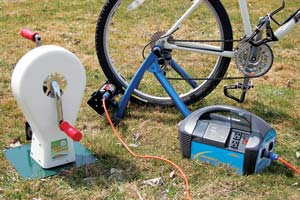

Make Electricity While You Exercise
Pedal-powered generators can play a small but useful role in some homes.
By John Gulland
October/November 2008
My neighbor Linda Archibald has an off-the-grid house that is powered by an array of photovoltaic cells (solar panels). When she asked if she could recharge her backup batteries with a bicycle adapted to generate electricity, I was skeptical - at first.
After doing a little research, I found that an efficient bike generator pedaled by a reasonably fit person can produce about 100 watts of continuous output. An experienced biker can produce a peak of more than 400 watts, but peaks don’t count for much when it comes to pedal power generators. Assuming an ambitious exercise period of one hour, a person could produce about 100 watt-hours of electricity. That is one-tenth of a kilowatt-hour (1 kilowatt-hour = 1,000 watts for 1 hour).
Most of us pay our local utilities about 10 cents per kilowatt-hour for electricity, including taxes and surcharges. By getting our heart rate up and breaking a sweat for an hour, we could produce 1 cent worth of electricity. Not much incentive, I thought.
With the electricity produced by an hour of pedaling, we could light a 100-watt incandescent bulb for an hour, or power a 20-watt compact fluorescent bulb for about five hours.
Pedal power is a fun idea that does generate usable amounts of electricity, but it’s easy to understand why a human-powered device can be viewed as a trinket without a meaningful role in a household’s energy supply. Nevertheless, some pedal generators are used regularly to do serious work. The critical factor to making pedal power a viable option is matching expectations with realistic output.
Will Pedal for Power
To find out what types of applications are practical for pedal power, I called Sheila Kerr, part owner and customer service manager of Windstream Power, which is probably the nation’s most successful manufacturer of pedal devices designed to produce electricity.
Sheila remembers pedaling the Bike Power Generator her dad built in the 1970s, and she couldn’t have imagined then that she would earn her living building and selling human-powered generators. Her father, Colin, is a physicist who went into the solar business in the quiet Eastern Townships of Quebec in the early 1970s.
After a couple of moves, the family and the business landed in Vermont, where it thrives today. The company also sells wind turbines. “Our Human Power Series is our bread and butter. We ship several hundred a year,” Sheila says.
Windstream Power offers two human-powered devices. One is the Bike Power Generator, which is a stand to fit your bike to; it quickly converts a regular bicycle to an electricity generator.
The other product is the Human Power Generator, a floor-mounted stand with a pedal on each side and a generator inside. Simply sit in a chair in front of the Human Power Generator and start pedaling. Windstream’s customers often have surprising uses for its products. For example, the company shipped more than 300 units of the Human Power Generator to Siberian forestry camps to power communications equipment.
Both models produce direct current (DC), but you can purchase a battery pack that includes an inverter so you can power household appliances that run on alternating current (AC).
Educators, “off-gridders” and marketing firms that want to use pedal generators to promote a green image are Windstream’s main customers for human-powered products. Schools and museums also have been steady customers for the company. “Windstream builds interactive and educational displays that can provide the participants with an opportunity to experience the physical energy required to produce electricity,” Sheila says.
She describes a particularly effective display in which the generator load can be switched between a compact fluorescent light bulb, which is easy to light up by pedaling, and an incandescent bulb, which takes more effort to light because of its greater energy consumption.
Sometimes a Little Power Goes a Long Way
While a human-powered generator won’t produce the output of a wind turbine or photovoltaic array, it can produce usable power that contributes to your overall energy needs. If you use less electricity to begin with, the amount generated by pedal power can meet a larger percent of your power needs.
David Butcher’s experience is a case in point. Every morning he goes out to his garage and pedals a stationary bike for at least a half hour. The effort he puts into his workout isn’t wasted on friction as it is in most fitness gyms. Every pedal stroke makes electricity that is sent down a cable to his office in the house to power several small electrical devices. Pedal power recharges his electric razor and his cell phone, runs a computer monitor, and periodically runs the compressor that tops off the air pressure in the tires of his vehicles. David also runs the bike generator directly to a water pump whenever necessary for aerating and filtering the small backyard fishpond.
David works out of his home office in San Jose, Calif., as the client services director for a Web agency, and he sits in front of a computer most of the day. He needed a way to stay fit and remembered the pedal power generator he had built in college. As a serious bicyclist, David combined that interest with his passion for renewable energy, and in 1976 built a pedal generator to use as a trainer. The generator worked, and it certainly showed him the limitations of pedal power. But the trainer was heavy and cumbersome with its homemade frame, so he liquidated it at a yard sale rather than moving it to his new digs.
Then several years ago, he built what he calls the PPPM (pedal power prime mover) for daily exercise and as an outlet for his penchant for tinkering with renewable energy.
It seems one’s satisfaction with pedal power has a lot to do with attitude. David’s house is a good candidate for the little extra power his morning fitness program produces because it’s already energy efficient. The Butchers have moved well down the road to energy self-sufficiency by relying on renewable energy. He and his wife have a 2.5-kilowatt grid-tied solar array and are net suppliers of electricity to their local utility. They also use their electric bike or tiny electric car for local errands.
David came up with his pedal generator after thinking about how to reduce the friction loss inherent when a rubber bike tire turns a small roller with a generator attached. He also wanted to smooth out the normal jerkiness of a freewheeling pedal stroke. And, finally, he needed a way to spin a half-horsepower generator fast enough to achieve peak efficiency. The result was a 36-inch-diameter plywood disk in place of a regular bike’s front sprocket. A groove cut around the perimeter guides a light chain that turns a sprocket on the generator. (He’s recently gone back to a design that uses friction instead of a chain to run the generator. It’s much quieter.)
Unlike many other pedal power generators, David’s creation is not adapted from a bicycle frame, but is built from scratch using simple materials. He sells construction plans for the PPPM on his Web site. (See "Resources," below.)
An Off-grid Boost
Linda Archibald came to our neighborhood three years ago. She had a contractor install a small solar-electric system to power electric equipment, including a well pump and the laptop computer that is vital to her consulting business. Her 330 watts of solar collectors, battery bank and an inverter provide for her modest electrical needs - except during what Linda calls “the dark times” from October through December. The first cloudy autumn was tense, with the batteries running low frequently enough to be a serious problem. It was then she asked me about pedal power.
At the time, I was planning to build a wind turbine using an alternator made up of permanent magnets and coils of copper wire. This was to be a low-speed alternator, which, as it turned out, matched the rotational speed of a bicycle rear wheel. After much measuring and consideration, and after buying a used mountain bike from a pawnshop, I managed to shoehorn the alternator I had built into the rear of the bike and drive it with the normal multispeed bike gears.
No one was more surprised than I at how well Linda’s power bike performed. It was pleasant to pedal and seemed at least as efficient as any of the human powered devices I had researched.
As an added bonus, the bike was remarkably quiet in operation because of its low speed and low friction, unlike some types of bike generators. But because of its complexity and the amount of time devoted to its construction, it cost several times more than any other power bike I’d seen.
Just the components purchased to build it cost more than $600, plus all the labor. Linda paid a total of $1,300, surely a premium price for a bike that could be expected to produce only 100 watts of power. Despite the high cost, I still had doubts it could make a meaningful contribution to Linda’s power needs.
I needn’t have worried. After more than a year of use, Linda views the bike as part of her overall electrical system and is pleased she is no longer totally at the mercy of the weather.
“In the end, I just integrated the bike into my normal routine,” she says. “In cloudy weather, the more computer work I have to do, the more pedaling I’ll do. The bike has put my solar-power system under my control.”
Unlike David, Linda doesn’t use the bike for fitness, although that is certainly a byproduct. What really matters to her is how it reduces worry and stress. “Now I can just deal with low power conditions during cloudy weather without fear of discharging the batteries too far,” she says.
Linda’s off-the-grid existence has led to some interesting exchanges when her city-dwelling children come to visit. Her daughter, an athlete, was induced to pedal furiously one morning in order to use her electric hair dryer. And Linda’s 19-year-old son had to pedal one evening to reach an agreed battery voltage before watching a movie on Linda’s laptop computer.
For many people the idea of pedaling to produce electricity or perform other work has a lot of appeal. In North America, though, we use so much cheap electricity that the output from pedal power seems miniscule by comparison. According to the Energy Information Administration, the average American household (2.4 people) goes through about 30 kilowatt-hours per day, which is 300 times more electricity than a reasonably fit person pedaling a good power bike can produce in an hour. That’s enough to cause anyone’s enthusiasm to waver.
On the other hand, people such as Linda Archibald and David Butcher have found ways to match the modest output of a pedal generator to their needs and expectations. In the process, they’ve proved that, under the right conditions, pedal power can be effective, fun and satisfying.
One hour of pedaling produces about 100 watt-hours. That’s about enough energy to power:
- A clock radio for 10 hours
- A 15-watt compact fluorescent light bulb for 6 hours, 40 minutes
- A laptop computer for 2 hours
- A 19-inch LCD TV for 1 hour, 40 minutes
- A toaster for 7 1/2 minutes
- An iron for 3 1/2 to 6 minutes
Resources
More on Linda’s power bike
In addition to tinkering with pedal power and proselytizing neighbors to renewable energy, John Gulland runs his home on solar- and wind-generated power. He’s also a wood heat expert.
 STEPHEN HUTCHINGS Why not convert your workout into useful power? |
 WINDSTREAM POWER You can generate electricity using a hand-cranked or foot-operated device (left) or a modified bicycle. An inverter (right) changes the direct current into alternating current for use with many common household appliances. |
|